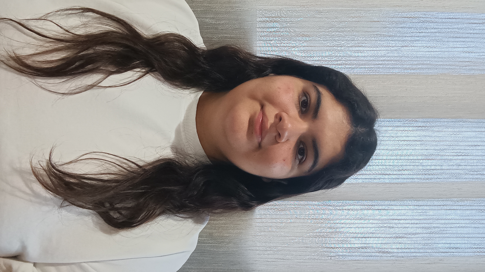
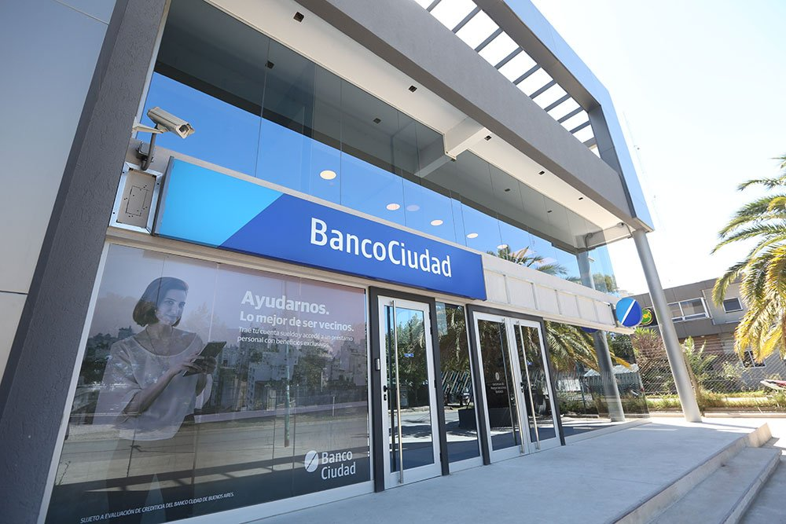
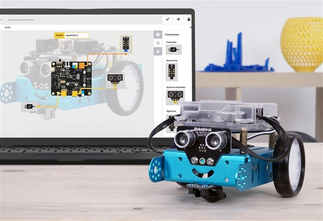
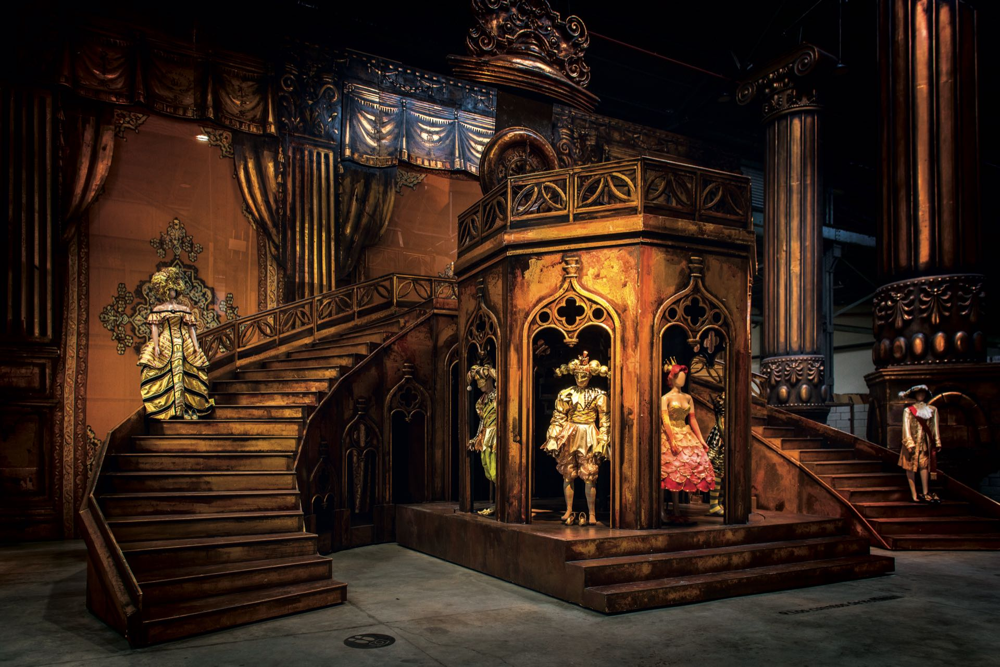
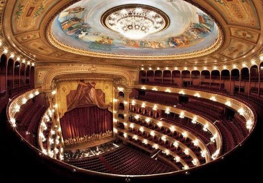

Mi nombre es Guadalupe Cajaraville, soy estudiante de último año en el Instituto Cristo Obrero. A paritr del año 2025, estuve realizando las Actividades Vinculadas al Futuro, donde aprendí liderazgo e innovación, a interactuar eficazmente con las personas, trabajar y cooperar en equipo, y aprender rápidamente conceptos y actividades nuevas.

Esta experiencia me permitió conocer más sobre el campo de la biología, explorar distintos temas relacionados con las ciencias naturales (Como por ejemplo: Extraer ADN de una banana) y ampliar mi interés por la investigación científica.
En este curso virtual aprendí los conceptos básicos de la educación financiera personal, cómo gestionar mi dinero, qué decisiones tomar basándome en mis ingresos y mis gastos, simulaciones de situaciones, cómo hacer y manejar un presupuesto, entre otras cosas.
Ver Certificado
Fue una capacitación por parte del Banco Ciudad, donde se enfocaron en enseñarnos cómo funcionan las billeteras virtuales, como resolver asuntos esenciales relacionados al banco, y cómo evitar estafas.
En una de las sedes del CBC, una licenciada en psicología realizó una charla sobre cómo funciona la Universidad de Buenos Aires, como por ejemplo, como inscribirnos, métodos de estudios, como manejarse autónomamente en la universidad, que es el Ciclo Básico Común CBC, breve historia de la universidad, etc.
Asistí a las jornadas de divulgación científica organizadas por la Universidad de Buenos Aires. Participé en talleres interactivos, charlas con investigadores y demostraciones en laboratorios sobre geología, ciencias de la atmósfera y oceanografía.
En este taller tuve la oportunidad de capacitarme sobre distintos métodos de estudios, uso de la Inteligencia Artificial, conocer y utilizar diferentes fuentes de información, y cómo organizarse en lo que respecta los horarios, exámenes y estudios.
En este curso virtual desarrolle la capacidad de hacer contactos profesionales a través de portales virtuales (Por ejemplo Linkedin), a armar un curriculum vitae, cómo reaccionar en una entrevista laboral y a conocer carreras, oportunidades, tendencias y profesiones claves.
Ver CertificadoCurso virtual en el cual desarrolle habilidades para tomar decisiones informadas sobre mis cuentas, hábitos financieros saludables y manejo de dinero de manera responsable.
Ver CertificadoTaller donde nos enseñaban conceptos indispensables sobre ecología y sobre huerta, para luego aplicarlos en las prácticas. Entre esos conceptos, estaban los tips para evitar plagas en las plantas, como armar una compostera, cómo organizarnos entre los grupos y cómo mantener la huerta.
Armamos la compostera, nos organizamos con los grupos para traer materiales, plantamos plantas autóctonas y algunos vegetales, decoramos el espacio que utilizamos, aprendimos las importancia de llegar a horario y a organizar el espacio que utilizamos.

Pusimos en práctica conceptos sobre programación inicial en un robot, trabajamos en equipos, aprendimos a utilizar los materiales tecnológicos que nos proporcionaban y aprendimos el detrás de los objetos tecnológicos.
En esta visita al Teatro Colón nos contaron la historia del lugar, nos dieron un recorrido y nos enseñaron todo el trabajo que se hace en las obras que presentan y su trabajo previo al estreno, desde el vestuario, la música, la escenografía, etc.

En esta oportunidad pudimos ver el almacén que contiene algunos vestuarios, objetos y lienzos de fondo que utilizan para las presentaciones en el teatro, también nos hablaron del trabajo que lleva montar una obra.

Fuimos a ver el espectáculo "Principio de éxtasis", que está basado en el libro "El Aleph" del autor argentino Jorge Luis Borges.
¡Gracias por visitar mi portafolio! Estoy siempre abierta a colaborar en iniciativas académicas, proyectos sustentables o nuevas oportunidades. Si te interesa lo que hago o deseas realizar una consulta, ¡no dudes en escribirme!
Respondas por correo o te conectes vía LinkedIn, será un gusto ponernos en contacto.